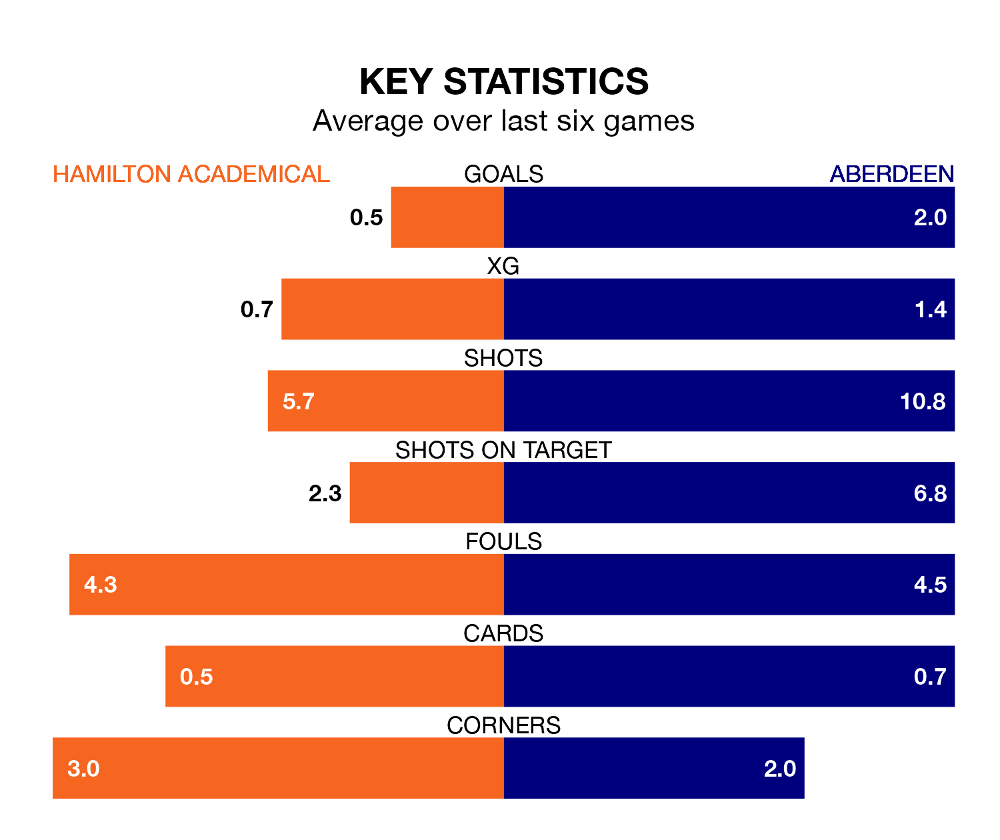

Hamilton Academical are on a terrible run ahead of hosting Aberdeen at the ZLX Stadium on Sunday, with just one point collected from their last six games.
The Accies have picked up just one draw in their last six SWPL 1 games, and face an Aberdeen side whose last six games have brought two wins and four losses.
Hamilton Academical are bottom of the table after 14 games, of which they have won none and drawn two, earning two points.
Aberdeen are five places ahead of the Accies in seventh, with six wins and eight losses putting them on 18 points.
In Bayley Hutchison, the visitors have one of the league's most on-form strikers so far this season. She has notched 13 goals in 14 appearances, to sit fourth in the scoring charts.
Her goal rate of one every 94 minutes is much quicker than that of Josephine Giard, the home team's top scorer with a goal every 235 minutes, and a total of five goals in 14 games.
With nine goals in 14 games so far this season, Hamilton Academical are the league's lowest scorers with 0.6 goals per game. And they are conceding more than average, letting in 63 goals at a rate of 4.5 per game.
Aberdeen are also below average scorers, with 1.8 goals per game, compared to a league average of 2.2. They have conceded 3.1 goals per game.
Over the last two years, Hamilton Academical and Aberdeen have played each other on seven occasions. Hamilton Academical won two of them and Aberdeen five.
On average, the Accies scored 1.1 goals and Aberdeen 2.0 in those matches.
Their last meeting was on September 10, when Aberdeen won 4-0 at home.
Hamilton Academical's last match was on November 26, a 6-1 loss against Hearts Women, with Mason Clark getting the goal for the Accies.
Aberdeen lost 13-0 against Celtic Women last time out, also on November 26.
